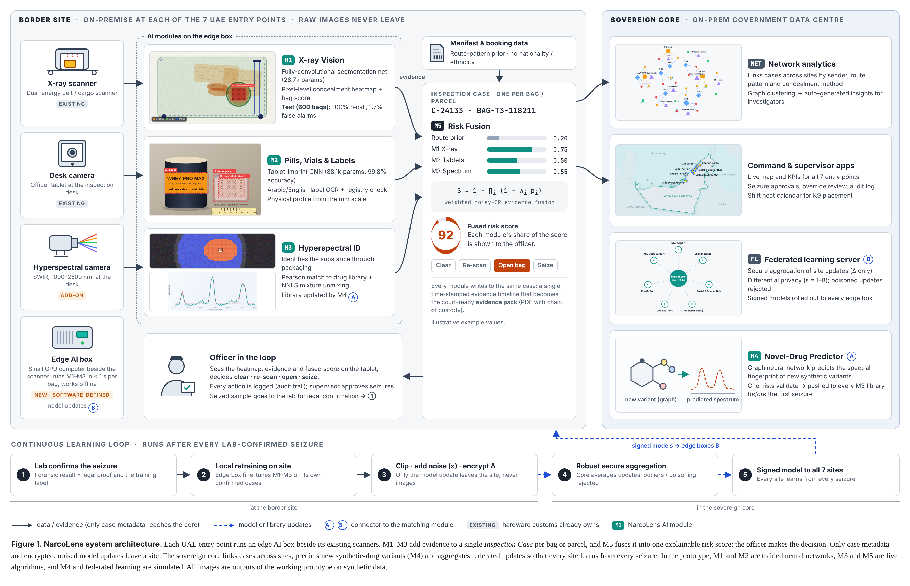

(a) M1: dual-energy scan with the AI concealment region(a) M1: dual-energy scan with the AI concealment region
(a) M1: dual-energy scan with the AI concealment region(a) M1: dual-energy scan with the AI concealment region (b) M2: label, inner pouch and imprinted tablets
(b) M2: label, inner pouch and imprinted tablets

 (d) Network analytics: cases linked by sender, route and concealment method
(d) Network analytics: cases linked by sender, route and concealment methodThe UAE already deploys advanced inspection systems, AI-driven risk analysis and K9 units at its borders. Dubai Customs reported 502 seizures, 406 kg of narcotic and psychotropic substances and more than 2.3 million tablets between January and May 2026 [1], which indicates the volume of findings that officers must assess. Concealment methods continue to change, from tablets pressed into clothing buttons to drugs blended into protein powder.
Once an item is flagged, officers still rely on operator interpretation of X-ray images and on laboratory confirmation to identify the substance, while the supporting evidence is recorded across separate systems. Under this uncertainty a decision can delay a legitimate traveller or parcel, or leave the basis for a seizure harder to defend. In the public sources we reviewed, we did not find a published system that automatically flags narcotics in UAE customs X-ray images; the absence of a publication does not establish the absence of a capability, and we make no claim about systems we cannot see.
This paper describes NarcoLens, a proposed screening and evidence workflow that connects X-ray analysis, tablet and label checks, hyperspectral readings, officer review and laboratory referral in one case record. Section 2 states the design principles, Section 3 the architecture, Section 4 the modules, Section 5 the prototype and its measured results, and Sections 6 and 7 the limitations, the validation plan and the intended pilot.
A software layer on existing equipment. NarcoLens runs on an edge computer beside each scanner and uses a hyperspectral camera at the inspection desk. It does not modify scanner firmware, which keeps the approach independent of the scanner vendor.
One case per item. Every bag or parcel receives a single case, identified by its tag, air waybill or parcel barcode. Each module appends evidence and a time stamp, so the record can be reviewed from the first scan to the laboratory referral.
The officer decides. The system flags, assesses and records. Clearing, re-scanning, opening or seizing an item remains an officer action, and seizures require supervisor approval.
Explanation by default. A flag is accompanied by a heatmap of the region that drove it, and the fused score shows the contribution of each module.
Privacy and fairness. Raw images stay at the site. The risk model uses route, booking and scan evidence only, and no nationality or ethnicity attribute.
Figure 1 (last page) shows the proposed deployment. Each of the seven entry points in the prototype runs an edge AI box that executes the X-ray, tablet and spectral modules. The scanner, the desk camera and the hyperspectral camera supply the inputs, and the officer sees results on a tablet and on a command dashboard. Manifest and booking data provide a pre-arrival prior. A sovereign core hosts network analytics, the supervisor and command applications, the federated-learning server and the variant predictor. Only case metadata and protected model updates leave a site.
M1 is a fully convolutional network that maps a three-channel, dual-energy scan (3×128×224) to a per-pixel probability of concealed organic material (64×112). It uses five convolution layers, two of them dilated (rates 2 and 4) to widen the receptive field, followed by bilinear up-sampling, and has 28,753 parameters. The bag score is derived from the segmentation map, and the same map is shown to the operator as a heatmap. Training used binary cross-entropy with a Dice term [2] and a one-cycle Adam schedule.
From an officer’s photograph, M2 isolates each tablet and measures its physical profile (diameter, shape and colour) against a millimetre scale bar. A convolutional classifier (88,100 parameters) assigns each 48×48 grayscale crop to one of four imprint classes: twin-crescent, plain, scored or letter-stamped. The twin-crescent class represents the Captagon-style marking. Text recognition for Arabic and English labels and the registry check are proposed components; in the prototype the label text is scripted for each sample.
M3 compares the short-wave infrared spectrum (1000–2500 nm) of each pixel with a reference library by Pearson correlation, and unmixes mixed pixels by non-negative least squares [3]. The prototype library holds eight controlled or illicit profiles and three benign ones, and these are synthetic spectra rather than laboratory measurements. M3 uses algorithms, not trained networks, which makes each match easy to inspect.
M4 proposes a graph neural network that predicts the spectral signature of a new synthetic variant from the known chemistry of its family. After review by forensic chemists, validated signatures would be added to every M3 library so that a variant can be recognised before its first seizure. In the prototype this cycle is simulated, and no predictive accuracy is claimed.
M5 combines the available evidence with a weighted noisy-OR model [4]:
where pi is the score of module i and wi its weight (pre-arrival prior 0.45, M1 0.90, M2 0.85, M3 0.97). A missing module does not contribute to the product. The weights are design parameters in the prototype and have not been calibrated on real outcomes. The officer sees the fused score together with each module’s share of it.
Cases are linked by shared sender, route pattern and concealment method, and connected clusters are summarised as insights for investigators, for example parcels from the same sender across two sites. The prototype demonstrates this on simulated cases.
After a laboratory confirms a seizure, each site fine-tunes its models locally. Updates are clipped, perturbed with noise and encrypted before reaching the core, where robust aggregation rejects outliers such as a poisoned update [5, 6]. Table 1 lists the privacy levels offered in the simulator.
| Level | ε | Noise | Relative learning speed |
|---|---|---|---|
| Low | 8 | Light | 100% |
| Medium | 3 | Moderate | 80% |
| High | 1 | Strong | 55% |
The prototype is a web application that runs offline. M1 and M2 are trained networks executing in the browser through a dependency-free runtime that matches PyTorch operations to within 10−6. M3 and M5 run as live algorithms. M4 and federated learning are simulated, and every screen states which parts are live and which are simulated.
Real concealment scans were not available for this prototype, so the models were trained on synthetic data produced by the prototype’s own renderers. This gives exact pixel-level ground truth. For M1, 6,000 training and 600 held-out bags contain random clutter, hard negatives such as dates, books, shoes and clean protein tubs, and zero to two concealments (packets, lining, a block in a protein tub, dense buttons, vials or a false bottom). For M2, 12,000 training and 1,200 held-out close-ups vary in lighting, rotation, blur and noise.
| Model | Test set | Metric | Result |
|---|---|---|---|
| M1 X-ray | 600 bags (311 with concealment) | Bag-level recall | 100% (311/311) |
| False alarms on clean bags | 1.7% | ||
| Bag-level accuracy | 99.2% | ||
| Pixel IoU | 0.916 | ||
| M2 Imprint | 1,200 tablet images | Four-class accuracy | 99.8% |
| Twin-crescent recall | 100% |
In the browser, on a development machine, M1 took about 0.3 s per bag and M2 about 15 ms per tablet crop. Production latency on edge hardware has not been measured.
(a) M1: dual-energy scan with the AI concealment region(b) M2: label, inner pouch and imprinted tablets(d) Network analytics: cases linked by sender, route and concealment methodThe results in Table 2 come from synthetic data generated by the same renderers used for training. They show that the pipeline works end to end and that the method can learn the task, but they do not predict accuracy on real scans, which differ in scanner type, bag contents and noise. The spectral library contains synthetic profiles, the fusion weights are uncalibrated, and the variant predictor and federated learning are simulations. We therefore place the work at Technology Readiness Level 3, a proof of concept.
The proposed route to validation is a shadow-mode trial in which NarcoLens runs beside current inspections on real scans without making decisions. Customs would hold the data. The trial would measure recall at an agreed false-alarm rate, performance by scanner vendor, time from flag to substance assessment, officer review time per flagged item, and completeness of the evidence record. Fusion weights would then be calibrated on the observed outcomes, and the models retrained on real, labelled scans under a data-sharing agreement.
The trial would target the entry points most exposed to parcel and cargo traffic, with Dubai Customs and the federal border authorities as the natural partners. The intended benefits are hypotheses to be tested, not results: fewer unnecessary manual searches, faster assessment of a flagged item, a more complete record for laboratory referral and prosecution, and shared learning across sites. A proposed acceptance criterion for the pilot is a false-alarm rate of no more than 5% per lane. Because the system makes recommendations and the officer decides, the pilot can run without changing existing procedures.
